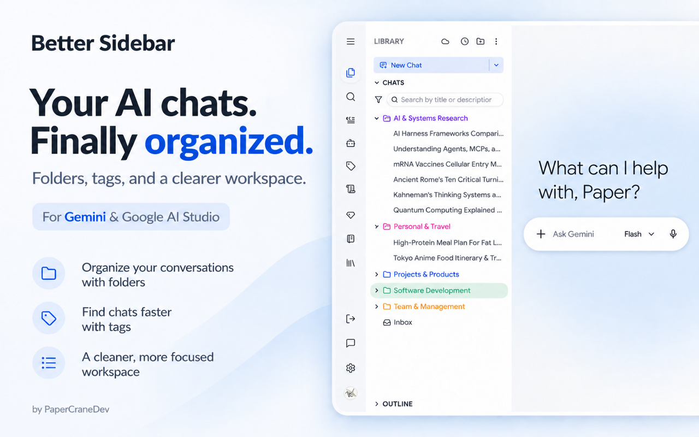
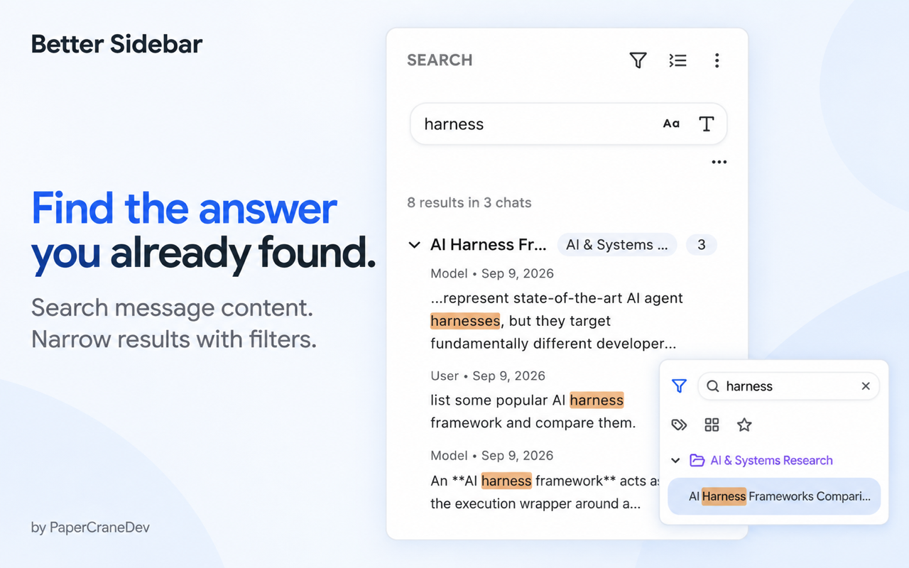
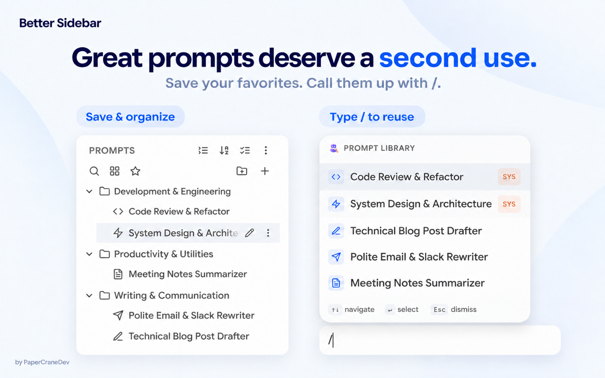
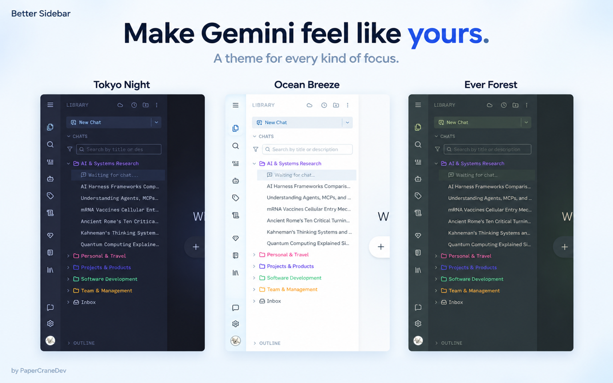
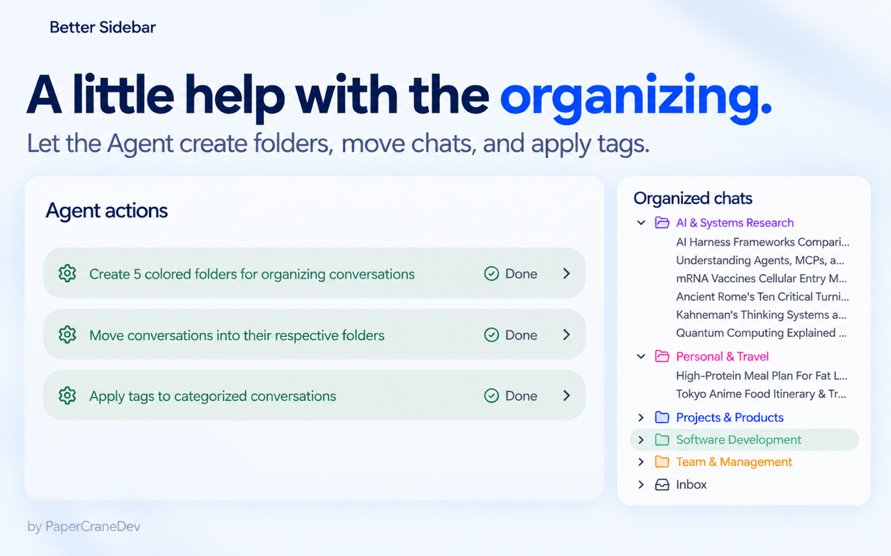
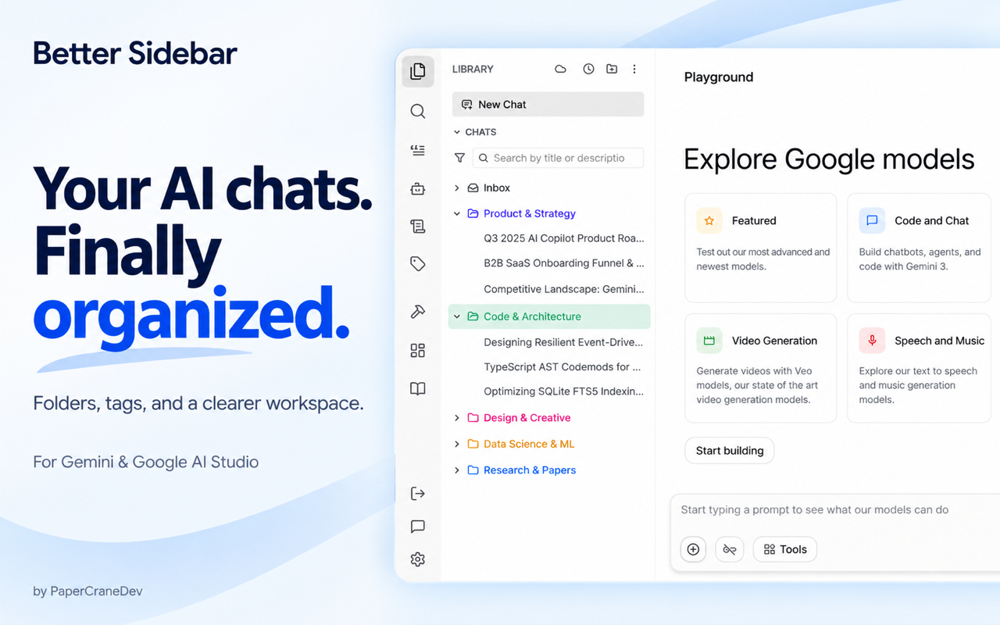
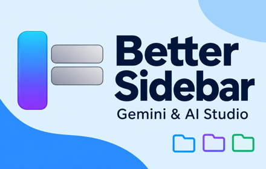
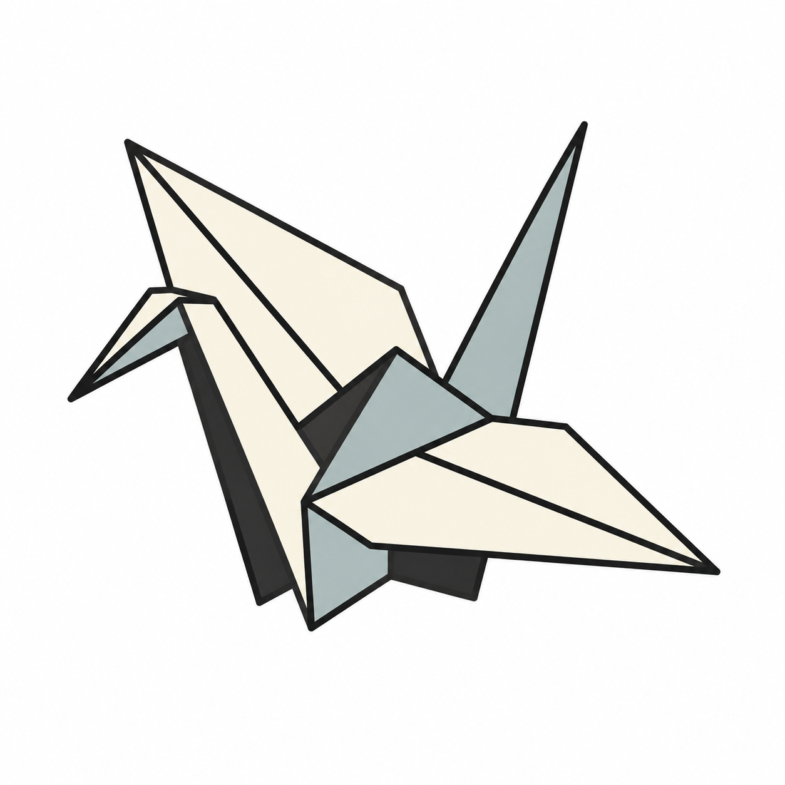

Better Sidebar · 浅色宣传图 V1
主序列：整理 → 搜索 → Prompt → 主题 → Agent。另附 AI Studio 备选封面及两张推广图。
这是供审阅的第一版：界面经过生图处理，并非原截图逐像素合成；千纸鹤高清版本为白底，不含透明通道。
文件夹整理 · Gemini 主封面
1280 × 800 · 下载 PNG

全文搜索与筛选
1280 × 800 · 下载 PNG

Prompt Library 与快捷调用
1280 × 800 · 下载 PNG

主题外观
1280 × 800 · 下载 PNG

Agent 辅助整理
1280 × 800 · 下载 PNG

AI Studio 备选封面
1280 × 800 · 下载 PNG

小型推广图
440 × 280 · 下载 PNG

Marquee 横幅
1400 × 560 · 下载 PNG
PaperCraneDev 高清白底重绘
1254 × 1254 · 下载 PNG

生成提示词 · 文件清单